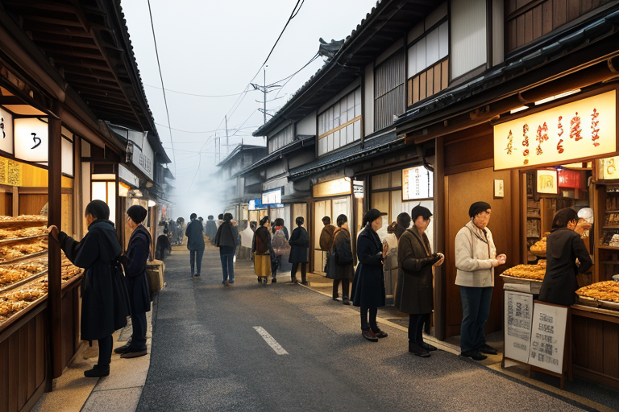
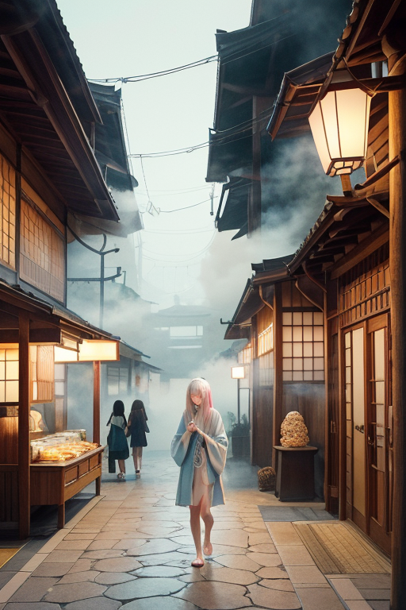
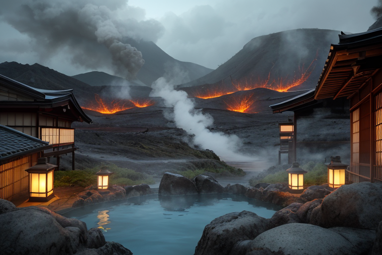
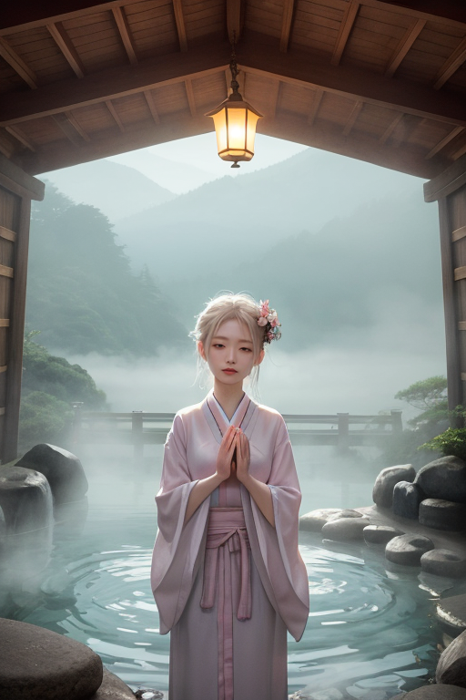
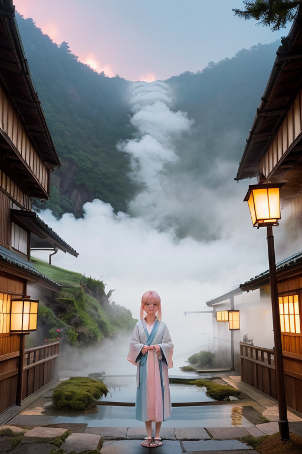

第一章 現実の大分
あなたはまだ気づいていない。この土地にも、王がいることを。
別府地獄めぐりの蒸気が立ち上る坂道は、土産物屋の活気に満ちていた。湯けむりの向こうで、観光客の笑い声とレジの音が混ざり合う。かぼすの爽やかな香り、揚げたてのとり天の脂の匂いが、湯煙に溶け込んで一つの「商いの空気」を形成している。由布院温泉の通りもまた、洗練された欲望が流れる。カフェや雑貨店に並ぶ人々の目は、少し疲れていて、同時に何かを求めている。癒しを商品として手に入れようとするその熱量が、この土地の地下を流れる膨大な湯の量と、どこか奇妙に共振していた。
湯けむりの濃い日、王は路地裏に佇む。白く薄青の光輪をわずかにたたえたその姿は、湯煙に紛れて見えない。彼はただ、この賑わいの「歪み」を感じている。求められる癒しが、深い休息ではなく、次の消費へのエネルギー補給にすり替わろうとする、その僅かなずれを。

第二章 歪みの兆候
由布院温泉の通りは、午後の柔らかな光を浴びて賑わっていた。土産物屋の前には列ができ、カフェのテラスは笑い声に満ちている。しかし、湯王オオイタリア・ミストの目には、別の光景が映っていた。人々の足取りは軽やかだが、その目には次の目的地を探る焦りがちらつく。癒されたいという欲求が、すぐに「次」へと向かわせるエネルギーに変容しつつあった。
主席妖精ミスティアが湯煙をまとって近づく。「湯量に乱れが生じ始めています。一部の源泉で、温度と流量が不安定に」。それは物理的なデータ以上のものを示していた。人々の「癒し」への欲望が、土地そのもののバランスを微妙に揺さぶっている証だった。
湯王は静かに目を閉じた。かぼすのさわやかな香りが、甘いお菓子の匂いにかき消されそうになる。癒しが消費の一部となり、その熱量が地中の歪みを増幅させる。彼はその流れを調整することはできても、止めることはできない。ただ、崩れかけたバランスの片側に、そっと手を添えるだけだ。

第三章 王の葛藤
別府の地獄めぐりを訪れる人々の目は、畏敬よりも、むしろ一種の興奮に輝いていた。大地の鼓動を、非日常の娯楽として消費するその欲望は、湯王の内に微かな軋みを生んだ。彼は癒しを与える存在であるはずなのに、与えられた癒しがさらなる欲望を生み、歪みの種となる。この循環は、彼の存在意義そのものを揺るがす問いだった。
「主よ、この熱量は……」ミスティアが湯煙の輪を乱しながら囁く。湯治客の「もっと、もっと」という無意識の願いが、温泉脈に雑音として乗ってくる。
「知っている」湯王は答えた。彼の手から放たれる薄青い癒光は、欲望の熱を和らげ、大地の呻きをなだめるための調整だった。しかし、その行為は、人々の「逃避」を結果的に助長しているのではないか。真の「再生」とは何か。彼は初めて、感情らしきもの──それは安堵の対極にある、名付けられないもどかしさ──を覚えた。

第四章 妖精との対話
「王様、あなたは『癒し』を『調整』とだけ考えすぎです」
由布院の湯煙の奥で、ミスティアが言った。彼女の輪郭は湯気に溶け、熱量を微かに揺らめかせている。
「ここに流れる金は、確かに欲望です。でも、それは『生きたい』という欲望の形。病を癒し、疲れを洗い流し、明日への一歩を買いに来る。湯治客が臼杵石仏の前で手を合わせる時、彼らは逃避しているのではなく、過去の自分に別れを告げているのです」
湯王は黙って聞いた。ユフリアが傍らで温泉脈の鼓動を伝える。それは単なる熱水の流れではなく、何百年も人々が願いを託し、磨いてきた祈りの道筋だった。
「南蛮文化も、だんご汁も、全ては外からのものを『受容』し、『再生』させてきたこの土地の性です。湯煙はただの水蒸気じゃない。人々が吐く息、変わりたいという切実な熱。私たちが調整すべきは、その熱が暴走すること。熱そのものを否定することじゃない」
妖精の言葉は、湯王の内側にあったもどかしさに、静かな形を与えようとしていた。

第五章 微調整と余韻
別府地獄めぐりの「海地獄」の池畔で、足を滑らせそうになった子供が、なぜか一歩手前で立ち止まった。湯煙がほんの一瞬、視界を遮ったからだ。由布院の雑貨店で、売り切れになっていた陶器が、最後の一点だけ棚に残っていた。店主は在庫を数え間違えていたらしい。臼杵石仏の前に立つ観光客のカメラから、大切なレンズキャップが転がり落ちたが、柔らかな苔の上で止まった。
誰も気づかない。湯王オオイタリア・ミストは、湯煙と共に街の熱量の中を漂い、ごく小さな「ずれ」を調整していた。巨大な歪みを直す力はない。ただ、熱が一点に集中して爆発する前に分散させ、流れが完全に止まる前に、ほんの少しだけ動かす。それは、かぼすの一滴がだんご汁の味を変えるような、微細な働きだ。
癒しとは何か。湯王は今、静かに理解しつつあった。完全な逃避は、熱を奪い、冷めさせてしまう。この土地が南蛮文化を、温泉を、自らの血肉として再生させてきたように、癒しとは、傷んだ熱を、新たな形で循環させるための、ほんの少しの「間」なのだと。
湯煙は、くじゅう連山から吹き下ろす風にゆらめき、やがて薄れていく。何事もなかったように、日常は続いてゆく。
あなたの町にも、王がいる。